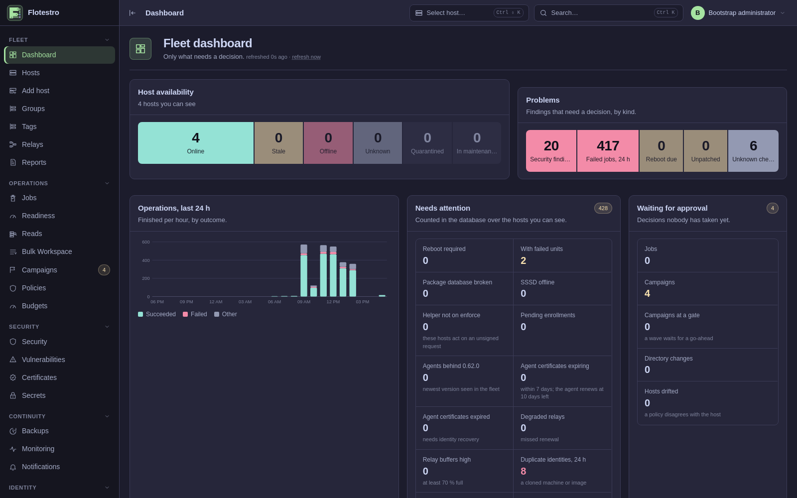
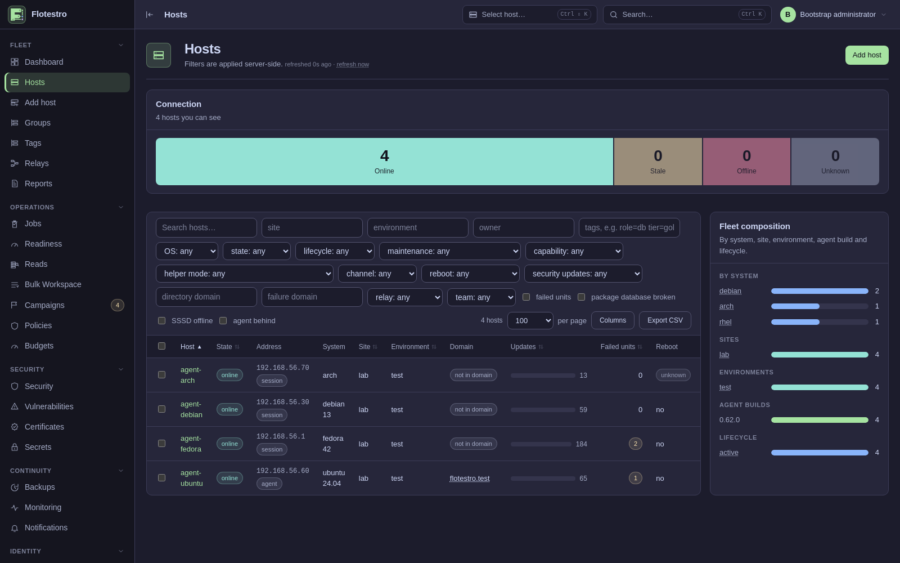
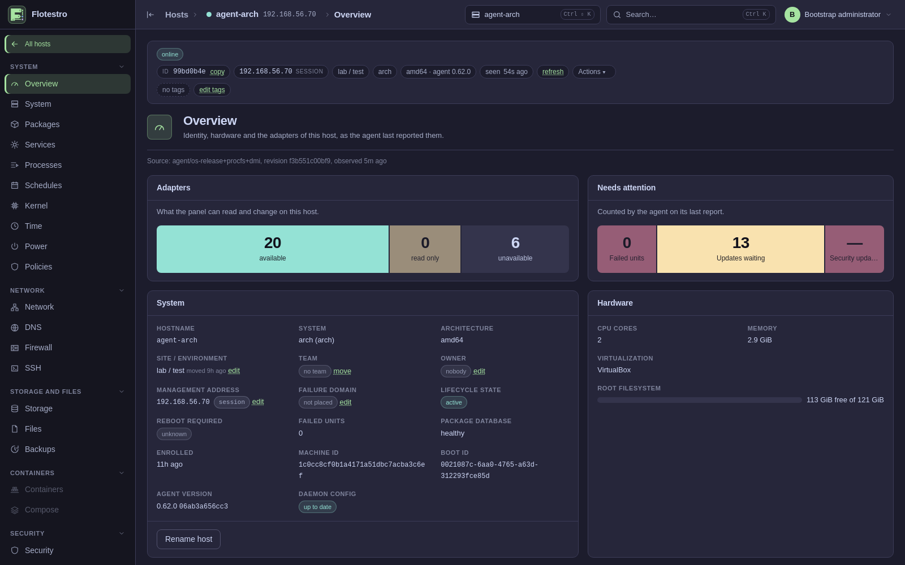
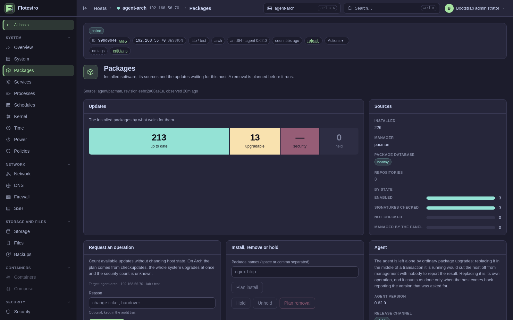
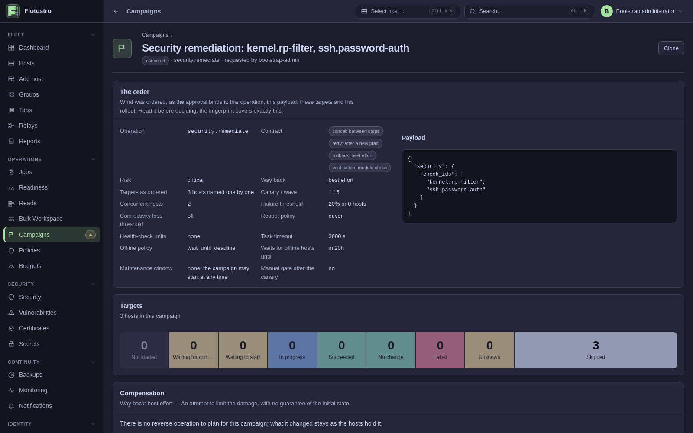
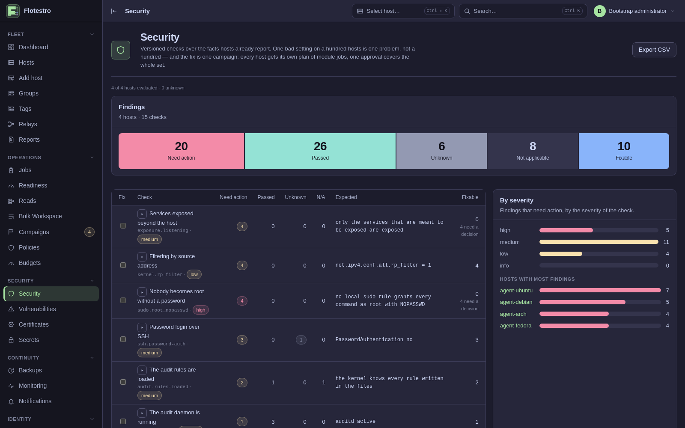
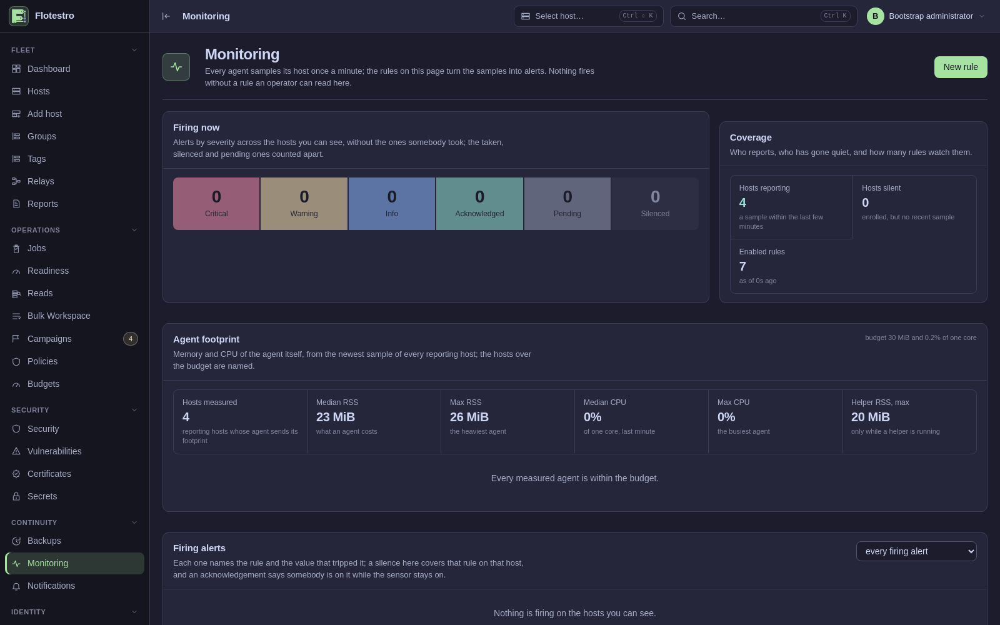
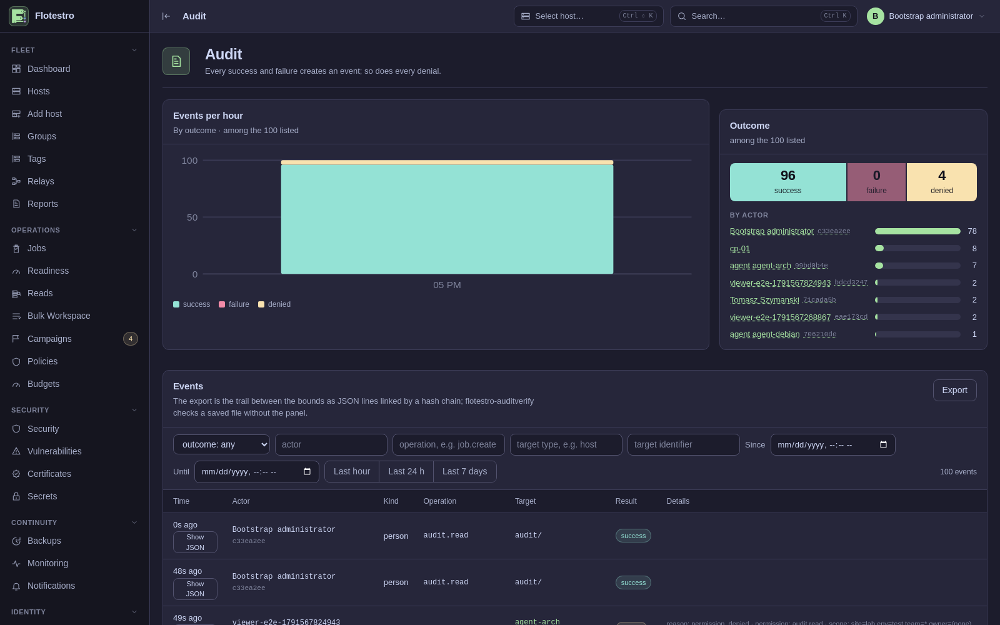

Zarządzanie flotą serwerów Linux
Jeden panel, który planuje, zatwierdza, przeprowadza i zapisuje zmiany na hostach Debian, Ubuntu, Fedora, RHEL i Arch.
Flotestro to control plane i agent. Agent zgłasza, czym host naprawdę jest; panel rozstrzyga, co to znaczy, i zleca zmianę. Nie ma operacji „uruchom polecenie”, a panel nigdy nie otwiera powłoki na hoście: każde działanie to wersjonowany kontrakt z własnym uprawnieniem, poziomem ryzyka, klasą blokady i trybem kampanii. W skali floty ta sama zmiana idzie jako kampania, z canary, falami, bramami i progiem niepowodzeń.
Czego się trzyma
- Tylko operacje typowane
- Każde działanie to wersjonowany kontrakt z własnym uprawnieniem, poziomem ryzyka, klasą blokady i trybem kampanii. Nie ma typu, który uruchamia dowolne polecenie.
- Plany zatwierdzane po digeście
- Host wylicza plan, zatwierdzający go czyta, a host wykonuje go tylko wtedy, gdy treść nadal zgadza się z zatwierdzonym digestem.
- Nieznane pokazujemy jako nieznane
- Fakt, którego agent nie ustalił, jest pusty, a nie zerowy; brak deklaracji to odmowa, a nie zgoda.
- Dowody, nie logi
- Każde zlecenie, zatwierdzenie i wynik to zdarzenie w śladzie audytowym spiętym łańcuchem
skrótów, który
auditverifysprawdza offline, bez bazy danych. - Bez zewnętrznego stosu monitoringu
- Agenci próbkują swoje hosty; panel trzyma próbki i agregaty, ocenia reguły oraz prowadzi alerty i wyciszenia.
Panel
Każdy obrazek poniżej pochodzi z działającej instalacji: czterohostowego laboratorium z jedną maszyną Debian, jedną Ubuntu, jedną Fedora i jedną Arch, stąd małe liczby. Chodzi o to, co robią te strony, a nie o rozmiar floty.
Flota


arch, debian 13, fedora 42,
ubuntu 24.04 — jego site i środowisko, to, czy jest w domenie, ile
aktualizacji na niego czeka, ile jednostek się wywróciło, czy chce restartu i kiedy był
widziany ostatni raz.Pojedynczy host

agent/os-release+procfs, revision 1dc313f1f045, observed 8m ago. Spośród
adapterów na tym hoście 16 potrafi czytać i zmieniać, 2 są tylko do odczytu, a 5 jest
niedostępnych, co jest inną odpowiedzią niż zero. Obok tożsamości i sprzętu stoi to, co
wymaga uwagi na samym tym hoście: żadnych nieudanych jednostek, 36 czekających
aktualizacji, brak aktualizacji bezpieczeństwa.
apt, zdrowa baza pakietów, siedem repozytoriów, z czego jedno ma sprawdzane
podpisy i żadne nie jest zarządzane przez panel. Operator może zaplanować aktualizacje
— samo ich policzenie niczego na hoście nie zmienia — albo zainstalować,
wstrzymać, zdjąć wstrzymanie i zaplanować usunięcie. Zwykłe aktualizacje nie ruszają
agenta: jego wymiana to osobna operacja, a za wykonaną uznaje się ją dopiero wtedy, gdy
host wraca, zgłaszając wersję, o którą poproszono.Zmiana w całej flocie

file.ensure na czterech
hostach: jeden canary i dwie fale, najwyżej dwa hosty naraz, próg niepowodzeń 25% albo
jeden host, polityka restartu never, polityka dla hostów offline
replan_on_reconnect i kontrakt operacji wypisany na stronie —
anulowanie między krokami, ponowienie po nowym planie, rollback przez dokładne
odtworzenie, weryfikacja przez ponowne sprawdzenie planu. Zapis zatwierdzenia mówi, kto
zatwierdził, na jakim uwierzytelnieniu (token API, bez ponownego uwierzytelnienia) i
dlaczego: zmiana CHG-1042 zatwierdzona na cotygodniowym przeglądzie. Powstaje raz
i nigdy się nie zmienia. Pod falami jeden wiersz na każdy kształt zmiany, z odciskiem
planu i czasem jego ważności — host, którego plan zdążył się zmienić, odmawia
wykonania.Co panel obserwuje

ssh.password-auth, exposure.listening,
kernel.rp-filter — oraz wartość, względem której była oceniana. Jedno
złe ustawienie na stu hostach to jeden problem, a naprawa to jedna kampania z jednym
zatwierdzeniem.
filesystem_used_percent > 90% utrzymane przez
dziesięć minut to ostrzeżenie dla całej floty, ta sama metryka powyżej 97% jest krytyczna
i nie czeka wcale.
Jak przebiega zmiana
- Host wylicza plan zmiany i zgłasza jego digest.
- Zatwierdzający czyta plan; na produkcji zatwierdza druga osoba.
- Host wprowadza zmianę tylko wtedy, gdy jej treść nadal zgadza się z zatwierdzonym digestem.
- Wynik, weryfikacja i każdy krok trafiają do śladu audytowego spiętego łańcuchem skrótów.

W skali floty ta sama zmiana idzie jako kampania: canary, fale, bramy ręczne lub automatyczne, progi niepowodzeń, okna serwisowe, budżety na site i polityka dla hostów offline.
Na czym potrafi działać
- Pakiety
- Plan, aktualizacja, instalacja, usunięcie, wstrzymanie, naprawa; plany dla każdego hosta zatwierdzane po digeście; aktualizacja agenta.
- Usługi i procesy
- Start, stop, restart, przeładowanie, włączenie, maskowanie, reset-failed; szczegóły jednostki; drzewo procesów; sygnały.
- Pliki i harmonogramy
- Zarządzane pliki z wersjami i rollbackiem; wpisy cron i timery systemd.
- Sieć i firewall
- NetworkManager, nmstate i netplan z watchdogiem łączności; firewalld, nftables i UFW; resolver.
- Pamięć masowa
- Montowania, sprawdzenie i zmiana rozmiaru systemu plików, LVM, SMART, czyszczenie urządzenia.
- Kontenery
- Kontenery, obrazy, prune, zdarzenia i logi Dockera; projekty Compose wdrażane według planu.
- Jądro i bezpieczeństwo
- sysctl, moduły, tryb SELinux, reguły audytu; kontrole bezpieczeństwa z naprawą w całej flocie.
- Czas
- chrony i timesyncd, strefa czasowa oraz test źródła przed jego wymianą.
- Tożsamość
- Użytkownicy, grupy, reguły HBAC i sudo we FreeIPA, symulacja dostępu, przyłączanie do domeny; konta lokalne i klucze.
- Certyfikaty i kopie zapasowe
- Skanowanie, rotacja kotwic zaufania, odnawianie przez certmonger; przebiegi restic i borg, weryfikacja i odtworzenie.
- Monitoring
- CPU, pamięć, swap, systemy plików, i-węzły i uptime próbkowane przez agenta; reguły alertów i wyciszenia w panelu.
- Podatności
- Listy pakietów korelowane ze źródłami Debiana, Ubuntu, Red Hata i NVD; źródła czyta panel, nigdy hosty.
- Kampanie
- Canary, fale, bramy ręczne lub automatyczne, progi niepowodzeń, okna serwisowe, budżety na site, polityka offline dla każdego hosta.
- Powiadomienia
- Trwały zapis wysyłany partiami na webhooka, podpisany HMAC-SHA256, dostarczany co najmniej raz i w kolejności.
Architektura
| Komponent | Działa jako | Rola |
|---|---|---|
flotestro-control-plane |
kontener, uid 65532, tylko do odczytu | API, panel webowy, brama agentów, enrollment, scheduler, silnik kampanii, PKI; wszystko, co pamięta, trzyma w PostgreSQL |
flotestro-agent |
nieuprzywilejowany użytkownik na każdym hoście | jedna sesja mTLS do bramy; inventory, metryki, plany; kroki wymagające uprawnień oddaje helperowi |
flotestro-agent-helper |
root, aktywowany przez gniazdo | wykonuje ustalony zbiór operacji uprzywilejowanych przez lokalne gniazdo; bez sieci |
flotestro-relay |
osobny kontener, jeden na odizolowany site | kończy sesje agentów z danego site i przekazuje je dalej; buforuje wyniki na czas awarii |
Hosty trzymają certyfikat z CA floty, wystawiony przy enrollmencie na podstawie klucza, który nigdy nie opuszcza hosta, odnawiany przez samego agenta i unieważniany, gdy zostaje zastąpiony. Tokeny enrollmentu są jednorazowe i przechowywane jako digesty. Użytkownicy logują się przez OpenID Connect; role biorą się z mapowania grup zawężonego do site i środowiska, a wrażliwe działanie wymaga uwierzytelnienia step-up. Sekrety pobiera host na krótką dzierżawę i nigdy nie jadą one w zadaniu. PostgreSQL jest jedynym źródłem prawdy: panel nie trzyma stanu floty nigdzie indziej.
| Port | Usługa |
|---|---|
| 8080 | panel i API; domyślnie na loopbacku, do wystawienia za proxy TLS |
| 8443 | brama agentów (mTLS) |
| 8444 | enrollment (TLS) |
| 8453 | relay |
Instalacja
Nie ma czego budować ani klonować. Panel działa z opublikowanego obrazu, a hosty biorą pakiet z podpisanego repozytorium projektu.
Panel z własną bazą danych
curl -fsSLO https://raw.githubusercontent.com/ultherego/Flotestro/main/docker/compose.yaml
docker compose up -d
docker compose cp control-plane:/var/lib/flotestro/bootstrap-token .Każde ustawienie ma działającą wartość domyślną, więc to już jest panel pod
adresem http://localhost:8080. Token bootstrap służy do pierwszego logowania; po
zmapowaniu grup dostawcy tożsamości na role należy go usunąć.
Do obsługi hostów na innych maszynach FLOTESTRO_ADVERTISE w
.env musi wskazywać nazwę, pod którą flota naprawdę dociera do tego panelu:
trafia ona do certyfikatu bramy agentów, a panel zostawiony na loopbacku odmawia zdalnego
enrollmentu, zamiast wystawić certyfikat, który host i tak by odrzucił.
env.example niesie całą listę.
Przy bazie danych, która już działa, dochodzi
compose.external-db.yaml: wyjmuje lokalną bazę, trzyma DSN do zweryfikowanego
serwera i konta zapisującego oraz podnosi schemat osobnym przebiegiem, zanim cokolwiek
zacznie obsługiwać ruch. DSN trafia do secrets/database-url przed pierwszym
startem, a ten sam plik działa pod Dockerem i pod rootless Podmanem, na hoście z SELinuksem
i bez niego. Para do kopii zapasowych, odizolowany site, przypięcie digestu i aktualizacja są
w docker/README.md.
Który obraz
Control plane to ghcr.io/ultherego/flotestro-control-plane, a relay
ghcr.io/ultherego/flotestro-relay. Wydanie publikuje pełną wersję i
sha-<twelve characters of the commit>, i żadne z nich nigdy nie jest
nadpisywane; gotowe wydanie przesuwa dodatkowo latest oraz alias wersji
minor, wydanie przedpremierowe nie przesuwa żadnego. Tag jest tym, co czyta człowiek
— produkcja przypina digest, który wypisał przebieg wydania.
Host, z repozytorium pakietów
Debian i Ubuntu
sudo install -d -m 0755 /etc/apt/keyrings
curl -fsS https://ultherego.github.io/Flotestro/packages/flotestro-repo.asc | sudo tee /etc/apt/keyrings/flotestro.asc >/dev/null
echo 'deb [signed-by=/etc/apt/keyrings/flotestro.asc] https://ultherego.github.io/Flotestro/packages/deb stable main' | sudo tee /etc/apt/sources.list.d/flotestro.list >/dev/null
sudo apt update && sudo apt install flotestro-agentRHEL i Fedora
sudo rpm --import https://ultherego.github.io/Flotestro/packages/flotestro-repo.asc
printf '%s\n' '[flotestro]' 'name=Flotestro' 'baseurl=https://ultherego.github.io/Flotestro/packages/rpm/stable' \
'enabled=1' 'gpgcheck=1' 'repo_gpgcheck=1' 'gpgkey=https://ultherego.github.io/Flotestro/packages/flotestro-repo.asc' \
| sudo tee /etc/yum.repos.d/flotestro.repo >/dev/null
sudo dnf install -y flotestro-agentArch Linux
curl -fsS https://ultherego.github.io/Flotestro/packages/flotestro-repo.asc | sudo pacman-key --add -
sudo pacman-key --lsign-key "$(curl -fsS https://ultherego.github.io/Flotestro/packages/flotestro-repo.asc \
| gpg --show-keys --with-colons | awk -F: '/^fpr:/ {print $10; exit}')"
printf '%s\n' '[flotestro]' 'SigLevel = Required DatabaseRequired' \
'Server = https://ultherego.github.io/Flotestro/packages/arch/stable' | sudo tee -a /etc/pacman.conf >/dev/null
sudo pacman -Sy && sudo pacman -S --noconfirm flotestro-agentKażdy indeks w repozytorium jest podpisany kluczem wydania i w żadnej z tych
linii nie ma wersji: apt update jest tym, czym host dowiaduje się o nowszej
wersji, a apt upgrade tym, co go na nią przenosi. Wydanie przedpremierowe idzie
do kanału testing, którego host pytający o stable nigdy nie czyta.
Bez drogi na zewnątrz pakiet pobiera się na maszynie z siecią, sprawdza względem
SHA256SUMS i przenosi ręcznie; każdy plik niesie też atestację buildu, którą
sprawdza gh attestation verify.
Potem enrollment hosta
Panel wypisuje dokładne polecenia dla swoich własnych adresów pod Dodaj host — repozytorium, pakiet, CA floty z odciskiem do porównania, jednorazowy token i start. Kształt dwóch ostatnich kroków:
sudo tee /var/lib/flotestro-agent/ca.pem >/dev/null # the fleet CA, fingerprint shown in the panel
sudo sed -i -e 's|^ enrollment_url: .*| enrollment_url: "https://panel.example.org:8444"|' \
-e 's|^ gateway_urls: .*| gateway_urls: ["https://panel.example.org:8443"]|' /etc/flotestro/agent.yaml
echo "$TOKEN" | sudo -u flotestro-agent flotestro-agentctl enroll # one-time, from the panel
sudo systemctl enable --now flotestro-agent
flotestro-agentctl diagnose # explains a host that does not show upToken jest jednorazowy i krótko żyje
Podaje się go plikiem albo na standardowym wejściu, nigdy w środowisku:
sudo -u flotestro-agent flotestro-agentctl enroll --token-file /run/token, a
plik potem kasuje. Host, który wciąż trzyma tożsamość z poprzedniej instalacji, dostaje
odmowę machine_already_enrolled: nowa CA floty nie uznaje
certyfikatów wystawionych przez poprzednią.
Dla całego inventory naraz jest rola Ansible w
ansible;
dla site za relayem — docker/compose.relay.yaml. Instalacja od zera, od
początku do końca, to
runbook instalacyjny.
Dokumentacja
-
Instalacja, konfiguracja i prowadzenie instalacji oraz runbooki na to, co idzie nie tak.
-
Podpisane repozytoria apt, dnf i pacman, z których hosty instalują agenta.
-
Usługi w Go, panel, migracje i pakietowanie, razem z kontrolami, które idą przy każdym pushu.
-
Pakiety dla amd64 i arm64 z sumami kontrolnymi, podpisami i zestawieniami komponentów.